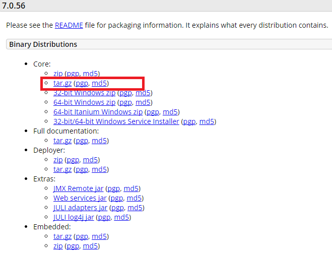

Let's take a brief look at how to install TOMCAT. Let's install the TOMCAT 7 product.
Before installing the TOMCAT, Java Development Kit (JDK) or Java Runtime Environment (JRE) must be installed.
Downloading TOMCAT
Go to http://tomcat.apache.org/download-70.cgi site and download the recently released TOMCAT binary file (apache-tomcat-7.0.46.tar.gz).

Installing TOMCAT
Move the downloaded compressed file to FTP. (tomcat installation account)
Extract the uploaded compressed file to the appropriate directory. (tar xvzf apache-tomcat-7.0.56.tar.gz).
Because it is a binary, the installation is finished by extracting it.
[tomcat@dev ~]$ tar xvzf apache-tomcat-7.0.56.tar.gz apache-tomcat-7.0.56/bin/catalina.sh apache-tomcat-7.0.56/bin/configtest.sh apache-tomcat-7.0.56/bin/daemon.sh apache-tomcat-7.0.56/bin/digest.sh apache-tomcat-7.0.56/bin/setclasspath.sh apache-tomcat-7.0.56/bin/shutdown.sh apache-tomcat-7.0.56/bin/startup.sh apache-tomcat-7.0.56/bin/tool-wrapper.sh apache-tomcat-7.0.56/bin/version.sh apache-tomcat-7.0.56/conf/ . . . apache-tomcat-7.0.56/webapps/manager/images/tomcat.gif apache-tomcat-7.0.56/webapps/manager/images/update.gif apache-tomcat-7.0.56/webapps/manager/images/void.gif apache-tomcat-7.0.56/webapps/manager/index.jsp apache-tomcat-7.0.56/webapps/manager/status.xsd apache-tomcat-7.0.56/webapps/manager/xform.xsl [tomcat@dev ~]$ mv apache-tomcat-7.0.56 /app/was/tomcat7
<Example of tomcat installation>
Setting environment variables
Set the following environment variables.
1. CATALINA_HOME: Specify the directory where TOMCAT is installed.
2. JAVA_HOME or JRE_HOME: Specify the directory where JDK or JRE is installed.
3. PATH: Add the $CATALINA_HOME/bin directory (the path of the bin directory under the TOMCAT installation directory set in step 1) to the PATH.
[tomcat@dev ~]$ vi .bash_profile export CATALINA_HOME=/app/was/tomcat7 export JAVA_HOME=/app/java/jdk1.6 export PATH=$CATALINA_HOME/bin:$JAVA_HOME/bin:$PATH [tomcat@dev ~]$ . .bash_profile
<Example of Linux configuraiton>
Running TOMCAT
Execute the following command to start the TOMCAT.
$ catalina.sh start (windows : catalina start) [tomcat@dev ~]$ catalina.sh start Using CATALINA_BASE: /app/was/tomcat7 Using CATALINA_HOME: /app/was/tomcat7 Using CATALINA_TMPDIR: /app/was/tomcat7/temp Using JRE_HOME: /app/java/jdk1.6 Using CLASSPATH: /app/was/tomcat7/bin/bootstrap.jar:/app/was/tomcat7/bin/tomcat-juli.jar Tomcat started. [tomcat@dev ~]$
Shutting TOMCAT down
Execute the following command to shutdown TOMCAT.
$ catalina.sh stop (windows : catalina stop) [tomcat@dev ~]$ catalina.sh stop Using CATALINA_BASE: /app/was/tomcat7 Using CATALINA_HOME: /app/was/tomcat7 Using CATALINA_TMPDIR: /app/was/tomcat7/temp Using JRE_HOME: /app/java/jdk1.6 Using CLASSPATH: /app/was/tomcat7/bin/bootstrap.jar:/app/was/tomcat7/bin/tomcat-juli.jar [tomcat@dev ~]$
{kind=link}